Weeks 11-12: AVR USB Devices and Programming
One of the relatively unexplored topics in this week’s lecture was USB, the ubiquitous protocol that allows computers to communicate with peripheral devices (containing microcontrollers). Creating a USB device allows any computer to talk to it without the specialized software and hardware we’ve been using so far. For these two weeks, I decided to understand the requirements to create USB-compatible device circuits and write the necessary software for a computer to talk to them.
This is an epically long post about creating a USB device from scratch and programming it.
Hardware or Software USB?
Making a USB device requires programming a microcontroller that can talk to a computer with the USB protocol. So far in the class, we’ve been writing microcontroller code that communicates with various protocols. It’s also possible to do this with USB, and the V-USB library implements this. However, having the microcontroller emulate USB in software has several drawbacks, including that it’s slow, and that the microcontroller will need to devote some amount of time to USB communication.
On the other hand, microcontrollers with hardware USB support
offload the necessary computations to dedicated circuitry. In Atmel’s
AVR line, Mega and XMega devices with the U suffix have hardware USB
support. In order to write microcontroller code to interact with the
USB hardware, there are helper libraries such as Atmel’s
USB stack and LUFA. I’ll be exploring LUFA as
it’s open source, is well documented, and has many examples.
Circuit Design
In the class inventory, we have a couple of devices with hardware USB support: the ATmega16U2 and the ATXMEGA16A4U. Because LUFA support for the XMEGA AVRs is currently not well-supported, I’ve opted to go with the ATmega chip.
Given that we’ll use the ATMega16U2, what’s next? Well, it turns out that there aren’t many examples of USB device circuits for microcontrollers floating around online. Even the datasheet isn’t very specific about examples of application circuits. However, after a long search, I was happy to discover that the Arduino Uno revision 3 uses an ATMega16U2 chip as a USB to serial converter for the actual ATmega328p being programmed. Its schematic was very helpful as an example to build a basic circuit.
From various datasheets and other examples, I have found several things to be aware of when designing these circuits:
-
In order to use Full-speed (12 Mbit/s) USB, the microcontroller needs to be able to generate a precize 48 MHz clock with a deviation of no more than 0.25%. Since resonators have 0.5% tolerance, This means only quartz crystals can be used, and moreover they need to evenly divide into this frequency in order for a phase-locked loop to generate this clock. For the ATMega16U2, this will require a 8MHz or 16MHz crystal - no substitutes.
-
Different quartz crystals at the same frequency are not interchangeable; they are specced at a fixed load capacitance that must be matched by the circuit for the specified accuracy. If this capacitance is far off, the crystal can be slower or faster than intended.
-
The USB signaling pins require resistors for impedance matching to optimize signal quality. The datasheet shows some unspecified resistors here, and I discovered the reason by asking this Electronics StackExchange question.
After the due diligence on the circuit engineering, I was finally ready to design the schematic. Because I was using some non-standard parts here, I found the Ladyada and Sparkfun Eagle libraries to be useful. In the circuit below, I’m using a 16MHz crystal in a HC-49 surface mount package, an ATmega32U2 - pin compatible with the ATmega16U2, and a USB A connector directly on the PCB.
The Eagle libraries also include supply parts which make it easier
to create VCC and GND connections by dropping parts instead of
naming nets. I strongly recommend this as a workflow! Note also
the impedance matching signaling resistors, and the capacitors paired
with the crystal, the values of which I borrowed from the Uno rev. 3
because of its similar configuration.
A power LED automatically lights up when the board is powered - a nice feature to have. The RGB LED in the circuit is attached to hardware PWM pins, so that it can be controlled with full color by setting the corresponding PWM rates.
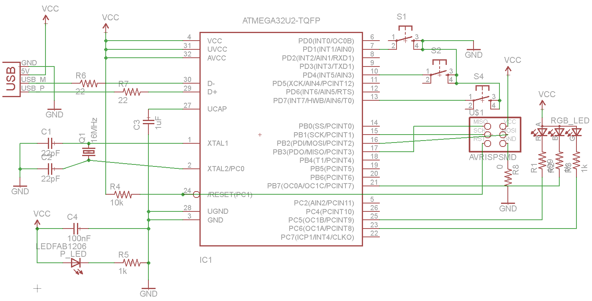
The mega16U2 comes in a TQFP32 package, similar to the mega328P. Compared with the pins on the tiny44 and tiny45, they are much closer together and smaller. In order to mill traces for them, one will either need to use a 10 mil end mill, or edit the pads to allow for more space with them. Given the overall stress caused to the class from 10 mil end mills, I decided to edit the pads to so that I could mill the board with the normal 1/64” end mill. Note that this makes the pads narrower than the pins, so soldering will be harder.
To change the pad size, you can just open the library in Eagle and use
the following menu. Here, I’ve changed the TQFP32 package’s pads from
0.16 x 0.05 to 0.14 x 0.06 - slightly thinner, but longer. In
routing the board, I used 0.14” routes when connecting to all of the
pads, and widened them to the 0.16” routes as soon as they left the
vicinity of the microcontroller.
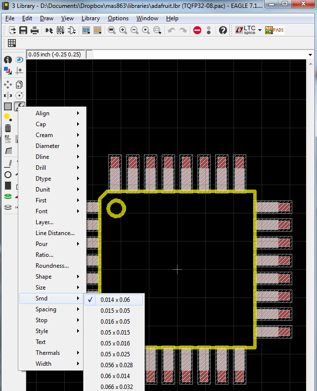
This is the board, all laid out. My original design had many more LEDs and switches, but it turned out I had bit off much more than I could chew - or lay out on a single-sided board. I removed many of the extra parts, and settled on three switches and one RGB LED. After many hours of routing, I came up with this compact, symmetric design using the integrated USB connector. It’s a pity that the mega16U2 doesn’t have any ADC hardware, or I would have added several sensors to read later via USB.
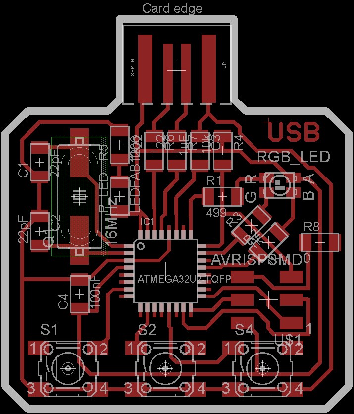
Here’s the result of milling the board. Note that there are some traces pulling off in the center of the board, which is less than ideal. This board was exported at 1200 DPI, but that still wasn’t enough for the very fine detail in the middle - the microcontroller pads and traces should only be slightly narrower than normal, but they appear to be significantly narrower in some spots. If I were to do this again, I’d export at an even higher resolution.
However, nothing essential has been damaged, and hopefully some solder will hold it all in place.
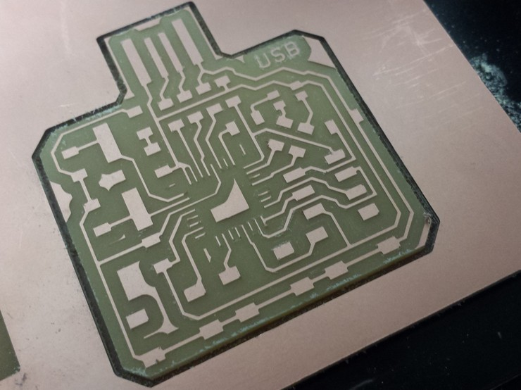
Although I used 6 offset paths instead of the normal 4, there are still copper traces around the edge of the board. This is a problem around the USB connector, where we don’t want to be shorting random pins to each other. I shaved these unwanted copper parts off with an X-acto knife.
I tested the board out in a USB socket and read the pin voltages, just to make sure the connector will work:
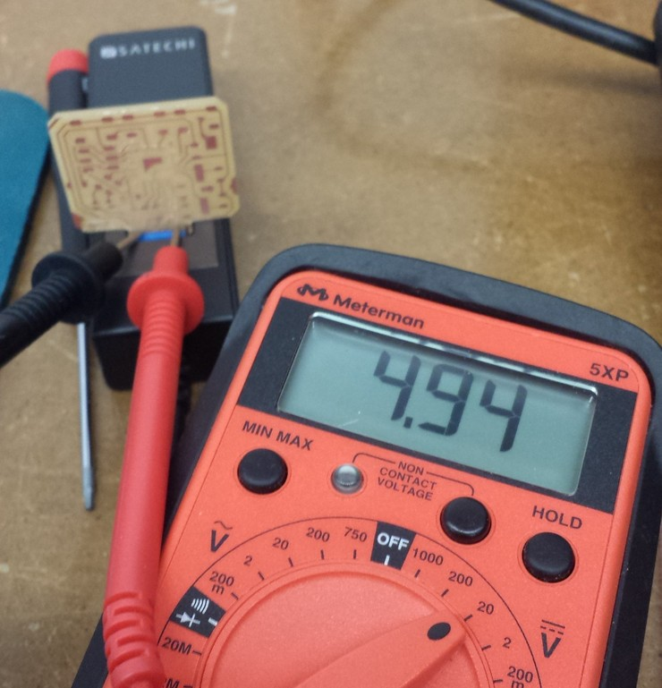
Soldering really small packages to a board is incredibly difficult, and one of the main reasons is the initial positioning of the IC. I didn’t want to use an initial solder joint to position the chip, because this risked damaging the delicate traces and it is very hard to position with tweezers in the first place. Nate Melenbrink suggested putting tape down over half of the chip to position it. This actually worked really well, because the length of the tape creates an “arm” that makes it much easier to make small adjustments, and it can be pressed down to hold the part in place. Masking tape works well for this, and leaves no residue.
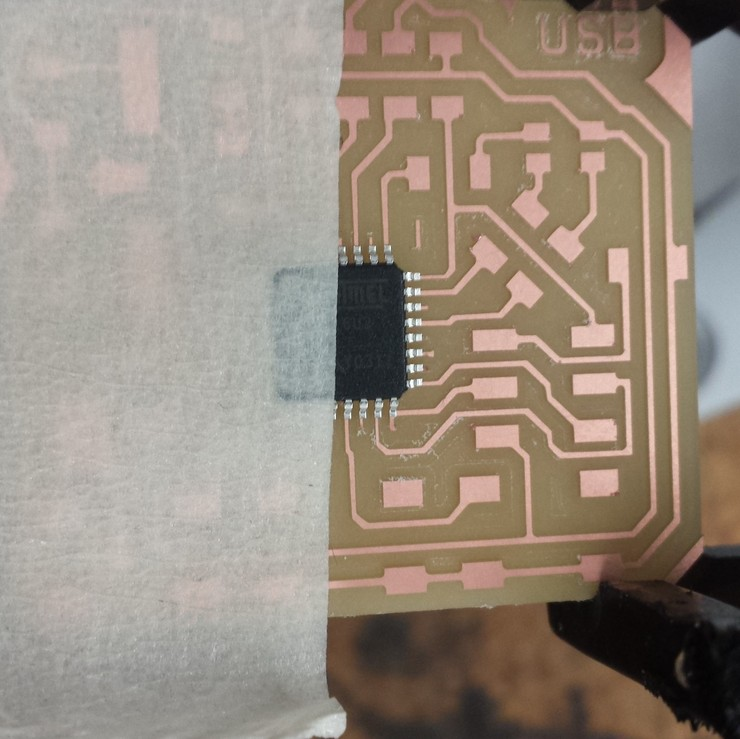
The traces on this chip are much too small to solder individually. Just do them all in a row, and use a wick to soak up any excess solder.
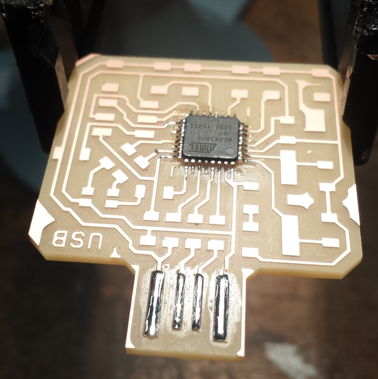
At the same time, I’ve tinned the USB connection pins. This serves two purposes. First, it protects the copper traces from oxidation, so that the pins don’t develop a coating that inhibits electrical contact. Second, it thickens up the contacts a bit so that they mate more tightly with the USB socket.
Note that the schematic called for 22pF capacitors between the crystal terminals and ground, and 22 Ohm resistors on the signaling pins. We don’t have those in the inventory, so I approximated by soldering two 10pF capacitors on top of each other for the crystal, and two 49.9 Ohm resistors on top of each other for the signaling pins. The finished board is below:
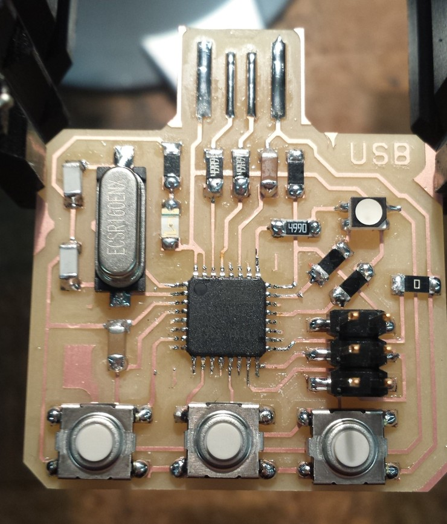
The power LED turns on when I plug it into the USB port, and there’s no smoke or heating. That’s a good sign…
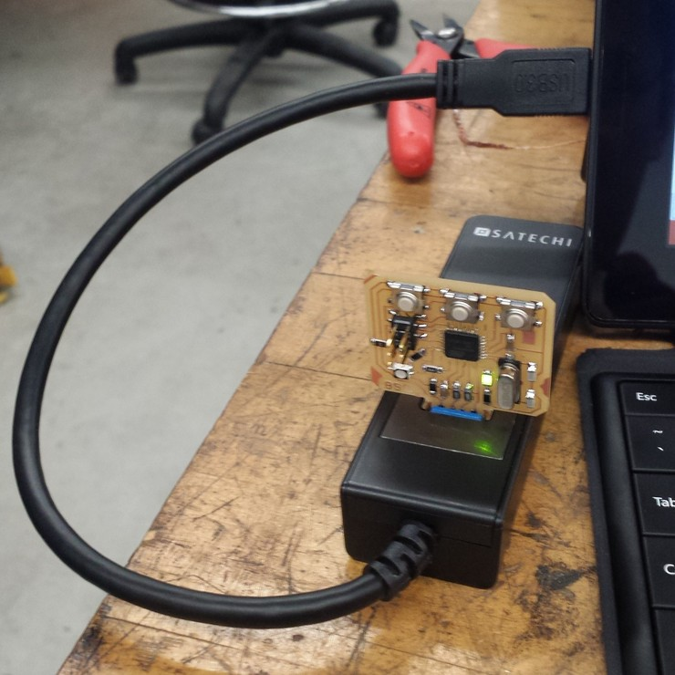
The best sign that things are working is that the board shows up
immediately in the Windows Device Manager as a USB device called
ATmega16u2 DFU.
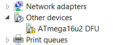
Note that it hasn’t even been programmed yet! However, this is because all AVR chips with hardware USB come with a DFU (Device Firmware Updater) bootloader that allows them to be programmed directly from the USB port without needing an ISP or other programmer. The DFU bootloader presents itself as a USB device that can be recognized by a computer.
This means that the microcontroller is able to talk to the computer and identify itself, and hopefully we are in a good position to program the board.
Programming via DFU
The DFU bootloader (and any bootloader in general) seems rather convenient for uploading code without needing an ISP. Atmel provides the FLIP program for communicating with DFU chips, but that looks like it hasn’t been updated for a while. There’s also an dfu-programmer, an open source project for doing this and the analogue to avrdude for uploading over DFU.
One thing to note is that the fuses cannot be changed over the DFU protocol; only the flash and EEPROM can. Luckily, all AVR chips with hardware USB have fuses programmed by default to use the external crystal oscillator as a clock, which will work immediately as long as the crystal has a 8 MHz or 16 MHz frequency with correctly paired capacitors.
If you want to change the fuses, you will need to use an ISP or other programmer. http://www.engbedded.com/fusecalc/ is a useful website if you want to figure out fuse settings for AVR chips that you are unfamiliar with.
Note: the datasheet incorrectly specifies that the fuses are configured by default to use the internal 8MHz RC oscillator with
CKDIV8set, so that the system clock runs 1 MHz by default. This turns out to be incorrect, and in fact the DFU bootloader would not be able to communicate over USB to the computer if this was the case. See this thread for more information.
Installation of dfu-programmer is pretty straightforward. On
windows, it also comes with a libusb-win32 driver so that it can
talk to the DFU bootloader over USB. Install this driver via the
Device Manager:
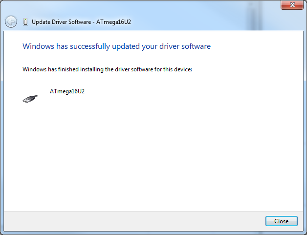
The board then shows up as ATmega16U2 under libusb-win32 devices
when the bootloader is running.
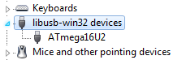
Be sure to check out the dfu-programmer documentation before forging ahead with programming over USB. One important note is that the entire chip has to be erased before you can run other commands on it. The following command does this and clears the lock bits in flash memory:
> dfu-programmer atmega16u2 erase --force
Erasing flash... Success
Checking memory from 0x0 to 0x2FFF... Empty.
Now, the board can be programmed. As usually recommended; I’ll start
with something simple: blinking LEDs. Here’s my Makefile for
programming and erasing the board over DFU:
PROJECT=blink
SOURCES=$(PROJECT).c
MMCU=atmega16u2
DFU_TARGET=$(MMCU)
F_CPU=16000000
CFLAGS=-mmcu=$(MMCU) -Wall -Os -DF_CPU=$(F_CPU)
$(PROJECT).c.hex: $(PROJECT).out
avr-objcopy -O ihex $(PROJECT).out $(PROJECT).c.hex;\
avr-size --mcu=$(MMCU) --format=avr $(PROJECT).out
$(PROJECT).out: $(SOURCES)
avr-gcc $(CFLAGS) -I./ -o $(PROJECT).out $(SOURCES)
program-dfu: $(PROJECT).c.hex
dfu-programmer $(DFU_TARGET) flash $(PROJECT).c.hex
erase-dfu:
dfu-programmer $(DFU_TARGET) erase
clean:
rm $(PROJECT).c.hex $(PROJECT).out
Note that the compilation toolchain is basically the same, but the hex
file is uploaded with dfu-programmer instead of avrdude. After the
first program, the flash needs to be erased before being programmed
again, so the erase-dfu target accomplishes that. If all is working,
programming is pretty straightforward:
> make program-dfu
dfu-programmer atmega16u2 flash blink.c.hex
Checking memory from 0x0 to 0xFF... Empty.
0% 100% Programming 0x100 bytes...
[>>>>>>>>>>>>>>>>>>>>>>>>>>>>>>>>] Success
0% 100% Reading 0x3000 bytes...
[>>>>>>>>>>>>>>>>>>>>>>>>>>>>>>>>] Success
Validating... Success
0x100 bytes written into 0x3000 bytes memory (2.08%).
At this point, the programming appears to be successful, but the LED
is not blinking and the device still shows up with the DFU
driver. However, there’s no need to panic here; this is because the
bootloader is still running and it hasn’t changed to the program code
yet. To run the uploaded program, one can just do dfu-programmer
(target) reset or pull out the board and plug it back in.
As a result, we have a nice way to program a board directly over USB, with no other tools required. This process is basically what the Arduino does, but without the nice GUI and tooling. Below, the LED is blinking after being programmed right from a USB port on my desktop. Look ma, no ISP!
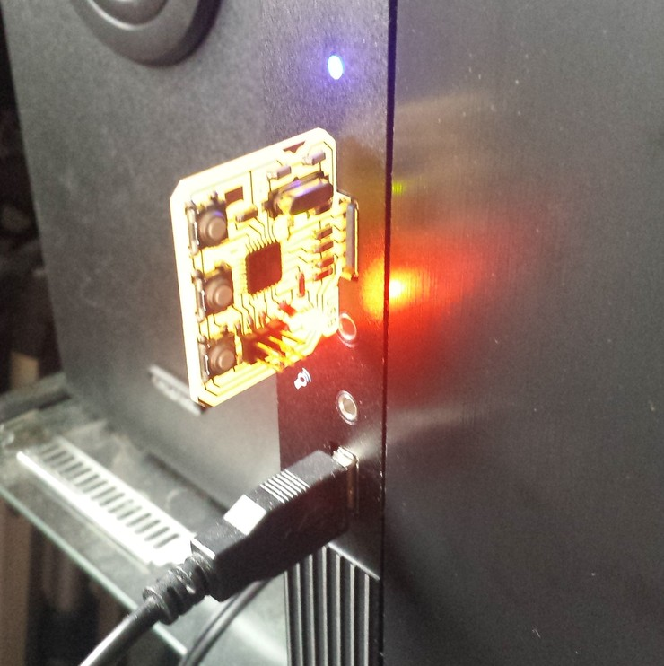
What if we want to program the board again after this? Well, when the blinking program is running, the board is not communicating over USB at all, so the system sees no device and therefore cannot program the board. We need some way to re-activate the bootloader to program the board. The datasheet lists three ways to do this, in Section 23.6:
- Jump to the bootloader section while the board is running, from program code. (We can’t do that, because we didn’t include such functions in the code to blink the LED.)
- Program the boot reset fuse, which always starts the board at the bootloader instead of the user code. However, this requires the fuse to be un-programmed afterward.
- Reset the board with the hardware boot enable fuse
HWBEprogrammed, and thePD7pin pulled low. This just temporarily enters the bootloader.
The HWBE fuse is programmed by default to make this mode of
resetting the board easy. The rightmost button on the board connects
PD7 and GND, so it can be pressed during reset to trigger this
condition. Resetting the board is as easy as briefly touching the
RST and GND pins together, which are adjacent on the ISP
header. Touching these two turns off the LEDs and the board shows up
as a DFU device again. Now, it’s ready to accept another program.
(In my case, I didn’t actually need to press the button while doing
this. The Internet suggests that the board will always start in DFU
mode if reset manually with the HWBE fuse programmed.)
Programming with LUFA
In the previous section, programming the board and restarting it made it disappear from the USB bus, and that’s because it no longer acts like a USB device when busy blinking the LED. For the board to appear as a USB device, it must use the USB protocol to be detected by and communicate with the computer. This is where the USB hardware comes in. It’s possible to write low-level code to interact directly with the USB hardware, but libraries like LUFA simplify this process significantly.
At a high level, LUFA provides a set of libraries for writing AVR microcontroller code, implementing USB devices. It does not include any host-side (computer) code. There are many example applications for LUFA which can be compiled on to many common demonstration and breakout boards. LUFA focuses on a modular approach to this software, and comprises the following parts at a high level:
- Low level modules to interact with the USB hardware on different microcontrollers
- Class drivers to emulate the behavior of various common USB devices
- Board drivers to interact with the hardware on prototyping boards, and custom implementations
- A build system to compile all relevant modules together and program the microcontroller (including over DFU!)
A completely custom LUFA application would use the low-level modules to interact directly with hardware, and a custom driver on the host to communicate with the device. You can find a useful (albeit somewhat outdated) guide for this here.
To start with something easier for this assignment, I’m going to modify the LUFA keyboard demo to work with the board I just created, and write custom board drivers. The goal is to turn this device into a (somewhat limited) HID-compliant USB keyboard that can be plugged into any computer and immediately recognized without the need to install drivers.
The project files are arranged as follows. I’ll go over the different parts below.
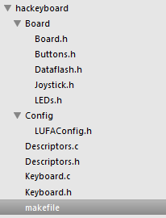
Makefile
This Makefile uses the LUFA build system, which requires some variables to be set properly but otherwise handles both the building and uploading.
MCU = atmega16u2
ARCH = AVR8
BOARD = USER
F_CPU = 16000000
F_USB = $(F_CPU)
OPTIMIZATION = s
TARGET = Keyboard
SRC = $(TARGET).c Descriptors.c $(LUFA_SRC_USB) $(LUFA_SRC_USBCLASS)
LUFA_PATH = ../../lufa/LUFA
CC_FLAGS = -DUSE_LUFA_CONFIG_HEADER -IConfig/
LD_FLAGS =
# Default target
all:
# Include LUFA build script makefiles
include $(LUFA_PATH)/Build/lufa_core.mk
include $(LUFA_PATH)/Build/lufa_sources.mk
include $(LUFA_PATH)/Build/lufa_build.mk
include $(LUFA_PATH)/Build/lufa_cppcheck.mk
include $(LUFA_PATH)/Build/lufa_doxygen.mk
include $(LUFA_PATH)/Build/lufa_dfu.mk
include $(LUFA_PATH)/Build/lufa_hid.mk
include $(LUFA_PATH)/Build/lufa_avrdude.mk
include $(LUFA_PATH)/Build/lufa_atprogram.mk
A few things to note for the Makefile:
- The
MCUvariable is used inavr-gccfor compilation, and must be set to the right microcontroller model. - The
BOARDvariable specifies which board driver to use. LUFA comes with board drivers for many common boards, but I’ve specified theUSERvalue here, which indicates that I’ll be writing custom board drivers and that they will be found in theBoard/subdirectory. F_CPUis the clock frequency, and needs to be set to the same value as the installed crystal for USB communication to work properly.TARGETis the main file to be compiled.LUFA_PATHindicates the relative path to the LUFA library (which I cloned from GitHub on to my computer).- The final lines pull in the other LUFA libraries and tools, including the core drivers and microcontroller programming tools.
Board Drivers
Board drivers allow different LUFA modules to be compiled to microcontrollers on different boards while abstracting away their implementation. LUFA contains provisions for boards with buttons, LEDs, DataFlash ICs, and a joystick. My board only has three buttons and three LEDs, so I’ve implemented those here.
The button driver requires three functions: Buttons_Init,
Buttons_Disable, and Buttons_GetStatus, which are pretty
self-explanatory as commented below. My buttons are connected to pins
1, 4, and 7 on port D, so the implementation is straightforward.
#define BUTTONS_BUTTON1 (1 << PD1)
#define BUTTONS_BUTTON2 (1 << PD4)
#define BUTTONS_BUTTON3 (1 << PD7)
#define BUTTONS_ALL (BUTTONS_BUTTON1 | BUTTONS_BUTTON2 | BUTTONS_BUTTON3)
static inline void Buttons_Init(void)
{
// Initialize the appropriate port pins as an inputs here, with pull-ups
// See Atmel doc 7799, section 12.2.3
DDRD &= ~BUTTONS_ALL;
PORTD |= BUTTONS_ALL;
}
static inline void Buttons_Disable(void)
{
// Clear the appropriate port pins as high impedance inputs here
DDRD &= ~BUTTONS_ALL;
PORTD &= ~BUTTONS_ALL;
}
static inline uint8_t Buttons_GetStatus(void)
{
// Return current button status here, debounced if required
return ((PIND & BUTTONS_ALL) ^ BUTTONS_ALL);
}
The LED driver is a bit more complicated, because I’ve hooked up the
pins of the RGB LED on different ports (the pins with PWM capability
from the 16-bit counter). The LED code is shown below. Note that the
RGB LED has a common anode, so the LEDs are turned on by driving their
respective pins low. This means that the binary operations are
flipped: PORT |= PIN becomes PORT &= ~PIN and vice versa. These
macro definitions look confusing, but they will come in very handy
later.
Note that I could not have implemented things as below if different LEDs were on the same pin number of different ports, due to the way the mask is used to select LED pins.
/** LED mask for the first LED on the board. */
#define LEDS_LED1 (1 << PB7)
/** LED mask for the second LED on the board. */
#define LEDS_LED2 (1 << PC6)
/** LED mask for the third LED on the board. */
#define LEDS_LED3 (1 << PC5)
#define LEDS_GB (LEDS_LED2 | LEDS_LED3)
/** LED mask for all the LEDs on the board. */
#define LEDS_ALL_LEDS (LEDS_LED1 | LEDS_LED2 | LEDS_LED3)
/** LED mask for none of the board LEDs. */
#define LEDS_NO_LEDS 0
/* Inline Functions: */
static inline void LEDs_Init(void)
{
// initialize LED port pins as outputs here
DDRB |= LEDS_LED1;
DDRC |= LEDS_GB;
// Initialize to off by driving high
PORTB |= LEDS_LED1;
PORTC |= LEDS_GB;
}
static inline void LEDs_Disable(void)
{
// Clear the LED port pins as high impedance inputs here
DDRB &= ~LEDS_LED1;
DDRC &= ~LEDS_GB;
PORTB &= ~LEDS_LED1;
PORTC &= ~LEDS_GB;
}
static inline void LEDs_TurnOnLEDs(const uint8_t LEDMask)
{
// turn on LEDs given in the LEDMask mask here, leave others as-is
PORTB &= ~(LEDMask & LEDS_LED1);
PORTC &= ~(LEDMask & LEDS_GB);
}
static inline void LEDs_TurnOffLEDs(const uint8_t LEDMask)
{
// turn off LEDs given in the LEDMask mask here, leave others as-is
PORTB |= LEDMask & LEDS_LED1;
PORTC |= LEDMask & LEDS_GB;
}
static inline void LEDs_SetAllLEDs(const uint8_t LEDMask)
{
// turn on only LEDs given in the LEDMask mask here, all others off
PORTB = ( (PORTB | LEDS_LED1) & ~LEDMask);
PORTC = ( (PORTC | LEDS_GB) & ~LEDMask);
}
static inline void LEDs_ChangeLEDs(const uint8_t LEDMask, const uint8_t ActiveMask)
{
// set the Leds in the given LEDMask to the status given in ActiveMask here
PORTB = ( (PORTB | (LEDS_LED1 & LEDMask)) & ~ActiveMask);
PORTC = ( (PORTC | (LEDS_GB & LEDMask)) & ~ActiveMask);
}
static inline void LEDs_ToggleLEDs(const uint8_t LEDMask)
{
// toggle the Leds in the given LEDMask, ignoring all others
PINB = LEDMask & LEDS_LED1;
PINC = LEDMask & LEDS_GB;
}
static inline uint8_t LEDs_GetLEDs(void)
{
// return the current LEDs status' here which can be masked against LED_LED* macros
return ((PORTB & LEDS_LED1) | (PORTC & LEDS_GB));
}
Keyboard Code
Finally, we are ready to implement the keyboard itself. Most of my code is similar to the existing demo, but I’ll highlight the changes below.
First up is to define masks in Keyboard.h to use the drivers we
wrote earlier. LEDs 1, 2, and 3 correspond to red, green, and blue
respectively. The code below will defines the LED color to be red,
yellow, and green as the device is powered on, enumerating, and ready,
and purple if there is an error.
/** LED mask for the library LED driver, to indicate that the USB interface is not ready. */
#define LEDMASK_USB_NOTREADY (LEDS_LED1)
/** LED mask for the library LED driver, to indicate that the USB interface is enumerating. */
#define LEDMASK_USB_ENUMERATING (LEDS_LED1 | LEDS_LED2)
/** LED mask for the library LED driver, to indicate that the USB interface is ready. */
#define LEDMASK_USB_READY (LEDS_LED2)
/** LED mask for the library LED driver, to indicate that an error has occurred in the USB interface. */
#define LEDMASK_USB_ERROR (LEDS_LED1 | LEDS_LED3)
The main function calls some functions to set up the hardware and enable interrupts that call various functions we define—this is how the LUFA library interacts with our code. The loop that follows just alternates between receiving data from the host and sending data back.
int main(void)
{
SetupHardware();
LEDs_SetAllLEDs(LEDMASK_USB_NOTREADY);
GlobalInterruptEnable();
for (;;)
{
HID_Device_USBTask(&Keyboard_HID_Interface);
USB_USBTask();
}
}
The initialization code, which calls initialization
functions in the libraries we wrote earlier, and in the LUFA USB
device driver. It also disables the clock prescaler, but we have to do
this manually because there is a bug where clock_prescale_set
function is undefined for certain microcontrollers in
avr/power.h.
void SetupHardware()
{
/* Disable watchdog if enabled by bootloader/fuses */
MCUSR &= ~(1 << WDRF);
wdt_disable();
/* Disable clock division */
// Implementation missing - http://savannah.nongnu.org/bugs/?39061
// clock_prescale_set(clock_div_1);
CLKPR = (1 << CLKPCE);
CLKPR = (0 << CLKPS3) | (0 << CLKPS2) | (0 << CLKPS1) | (0 << CLKPS0);
/* Hardware Initialization */
LEDs_Init();
Buttons_Init();
USB_Init();
}
The LUFA library allows various handlers to be defined that are triggered by interrupts. The following code uses the LED masks we set earlier to set the LED color display as different USB events are triggered. During a normal startup sequence, the board should display red, yellow, and finally green. If there is an error, it will be purple.
/** Event handler for the library USB Connection event. */
void EVENT_USB_Device_Connect(void)
{
LEDs_SetAllLEDs(LEDMASK_USB_ENUMERATING);
}
/** Event handler for the library USB Disconnection event. */
void EVENT_USB_Device_Disconnect(void)
{
LEDs_SetAllLEDs(LEDMASK_USB_NOTREADY);
}
/** Event handler for the library USB Configuration Changed event. */
void EVENT_USB_Device_ConfigurationChanged(void)
{
bool ConfigSuccess = true;
ConfigSuccess &= HID_Device_ConfigureEndpoints(&Keyboard_HID_Interface);
USB_Device_EnableSOFEvents();
LEDs_SetAllLEDs(ConfigSuccess ? LEDMASK_USB_READY : LEDMASK_USB_ERROR);
}
Finally, the two most interesting parts. The HID (Human Interface
Device) protocol requires that a device regularly report state to the
host. For the keyboard, this is simply which keys are being
pressed. The following function reads the state of the three buttons,
using the Buttons_GetStatus() function from before, and reports them
as capital A, B, and C keys respectively if they are being
pressed. Basically, this is a keyboard with just three keys.
bool CALLBACK_HID_Device_CreateHIDReport(USB_ClassInfo_HID_Device_t* const HIDInterfaceInfo,
uint8_t* const ReportID,
const uint8_t ReportType,
void* ReportData,
uint16_t* const ReportSize)
{
USB_KeyboardReport_Data_t* KeyboardReport = (USB_KeyboardReport_Data_t*)ReportData;
uint8_t ButtonStatus_LCL = Buttons_GetStatus();
uint8_t UsedKeyCodes = 0;
if (ButtonStatus_LCL & BUTTONS_BUTTON1)
KeyboardReport->KeyCode[UsedKeyCodes++] = HID_KEYBOARD_SC_A;
if (ButtonStatus_LCL & BUTTONS_BUTTON2)
KeyboardReport->KeyCode[UsedKeyCodes++] = HID_KEYBOARD_SC_B;
if (ButtonStatus_LCL & BUTTONS_BUTTON3)
KeyboardReport->KeyCode[UsedKeyCodes++] = HID_KEYBOARD_SC_C;
if (UsedKeyCodes)
KeyboardReport->Modifier = HID_KEYBOARD_MODIFIER_LEFTSHIFT;
*ReportSize = sizeof(USB_KeyboardReport_Data_t);
return false;
}
We can make the LEDs do something as well. Since there are three of them, the natural thing would be to use them to display the state of Num Lock, Caps Lock, and Scroll Lock respectively. Adapting from the demo, the code for this is pretty straightforward:
void CALLBACK_HID_Device_ProcessHIDReport(USB_ClassInfo_HID_Device_t* const HIDInterfaceInfo,
const uint8_t ReportID,
const uint8_t ReportType,
const void* ReportData,
const uint16_t ReportSize)
{
uint8_t LEDMask = LEDS_NO_LEDS;
uint8_t* LEDReport = (uint8_t*)ReportData;
if (*LEDReport & HID_KEYBOARD_LED_NUMLOCK)
LEDMask |= LEDS_LED1;
if (*LEDReport & HID_KEYBOARD_LED_CAPSLOCK)
LEDMask |= LEDS_LED2;
if (*LEDReport & HID_KEYBOARD_LED_SCROLLLOCK)
LEDMask |= LEDS_LED3;
LEDs_SetAllLEDs(LEDMask);
}
That was a lot of stuff, but if all goes well, we should have a limited functionality keyboard which is able to type three letters, and display the system lock key states!
Programming the Device
Programming the device with LUFA’s build system is pretty easy. With
dfu-programmer installed, and the board in DFU mode, it’s just:
> make dfu
After the compilation is done, we see the following:
[DFU] : Programming FLASH with dfu-programmer using "Keyboard.hex"
dfu-programmer atmega16u2 erase
Checking memory from 0x0 to 0x2FFF... Not blank at 0x1.
Erasing flash... Success
Checking memory from 0x0 to 0x2FFF... Empty.
dfu-programmer atmega16u2 flash Keyboard.hex
Checking memory from 0x0 to 0x10FF... Empty.
0% 100% Programming 0x1100 bytes...
[>>>>>>>>>>>>>>>>>>>>>>>>>>>>>>>>] Success
0% 100% Reading 0x3000 bytes...
[>>>>>>>>>>>>>>>>>>>>>>>>>>>>>>>>] Success
Validating... Success
0x1100 bytes written into 0x3000 bytes memory (35.42%).
dfu-programmer atmega16u2 reset
This is really nice! It erases the flash, writes the program, then resets the board to run the newly flashed program—so it’s just one command to get from code to running on the board. (To program the board again, we do have to manually reset it into DFU mode, as mentioned earlier.)
Note that the bootloader takes up 4K of the ATmega16U2’s 16K flash memory. If a bigger program is needed, it would be time to switch to an ISP.
The first time I programmed the board, I saw the following dreaded
message. It turns out this was a result of setting the wrong F_CPU
value, due to the datasheet error that caused me to misunderstand the
default clock settings on the microcontroller. A correct value of 16
MHz, and this error went away.
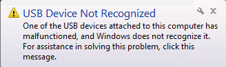
Success!
This has been a long post. It was quite a lot of work to create a USB device from scratch, but very satisfying to figure out all the quirks to make it work. The following video demonstrates how the USB board displays the state of the system’s lock keys as red, green, and blue, and also using the three buttons for input. Note that when the device is first plugged in, it quickly flashes from red to yellow to green before displaying the lock key states. When multiple lock keys are on, the LED produces additive colors.